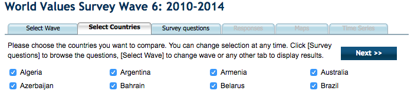
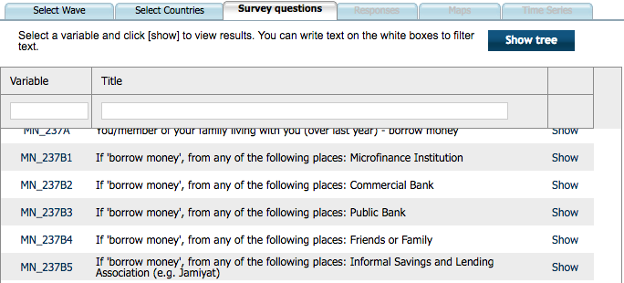

Is there a relation between people's confidence in different social installments and their confidence in environmental and women's organisations?
The first part of the WVS is selecting the countries, which is a tedious and a cluttered task.
The same goes for selecting the values you want to view. Either you scroll through hundreds of values or you know exactly which one you would like to look at.
The biggest issue is that you can't choose multiple values at once, you have to choose one at a time. This means that when comparing multiple values, you have to repeat the same choosing procedure multiple times, and repeat it again for another time wave.
The goal of my visualization is to be able to get an overview and quickly
I have learnt more about using d3, I've combined two examples; Kerry Rodden's Zoomable sunburst and Sequences sunburst.